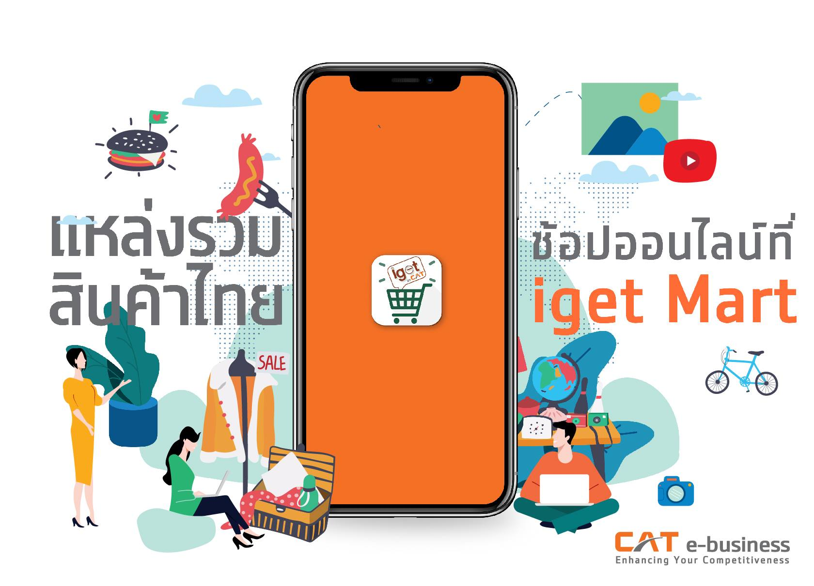
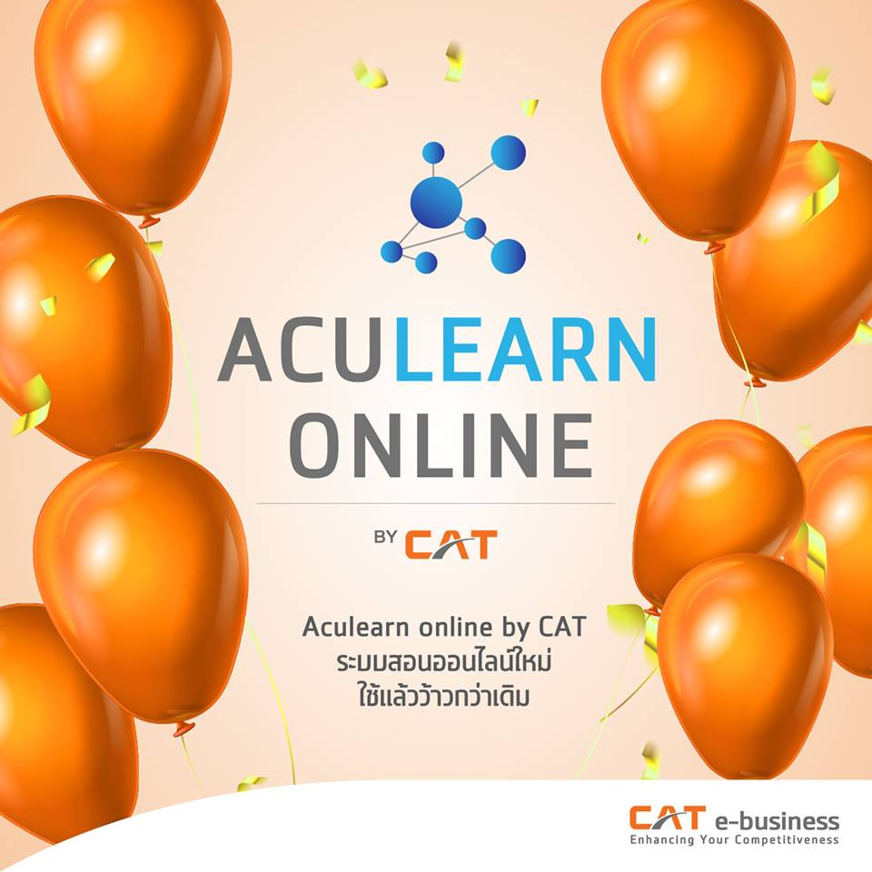
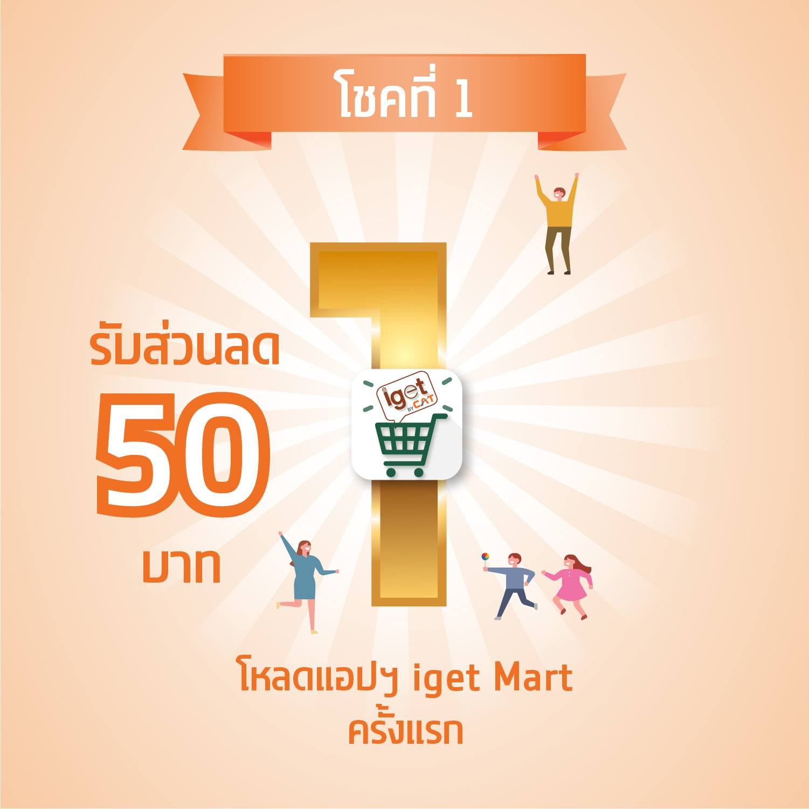
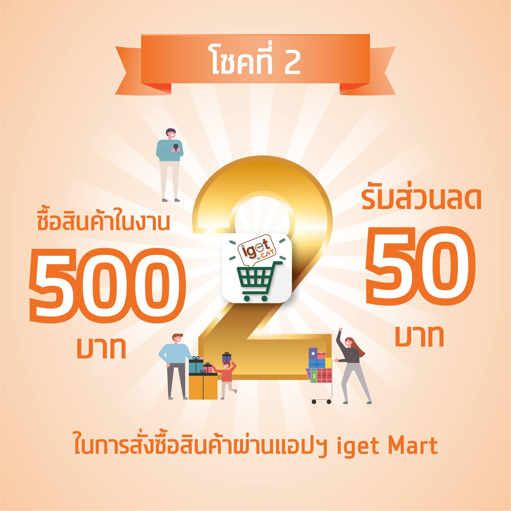
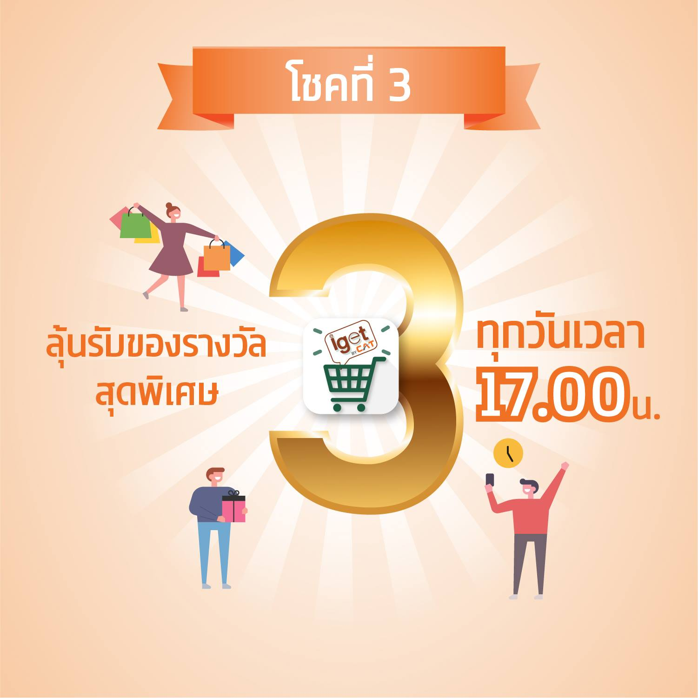
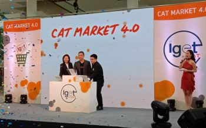
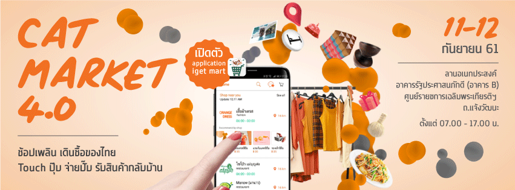
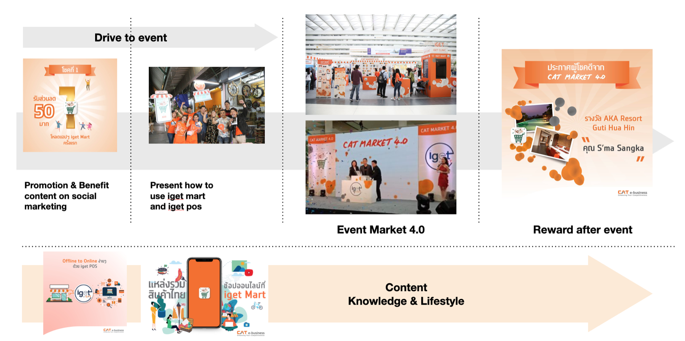

CAT built iget mart, an online buying-and-selling platform. But a new app doesn't spread on its own — so the campaign launched it in the real world. Social media pulled people to a physical market event, and the event sent them back to the app.

CAT was launching iget mart, an online buying-and-selling system. The hard part wasn't building it — it was getting real buyers and sellers to try it. A download link on its own convinces no one.
So the campaign flipped the usual launch. Instead of asking people to meet the platform online, it brought the platform to them: a physical market event where visitors could see the system work, use it, and win something for doing so.

The campaign was designed as one continuous journey. Every step handed people to the next — from their social feed to the event grounds and back to the app.
Before the event, the team went where the buyers already were: physical markets. They handed out discounts on the spot and published promo content introducing the iget mart system.
Social media ran giveaways of prizes and discounts — all redeemable only at the event. Online attention became a ticket to a real place.
At the event, every purchase came with a QR code. Scanning it registered the buyer for a prize draw — turning each sale into an entry and each visitor into a platform user.
The prizes were drawn after the event, so attendees stayed connected online to follow the results. The journey ended where the platform lives: on their phones.





